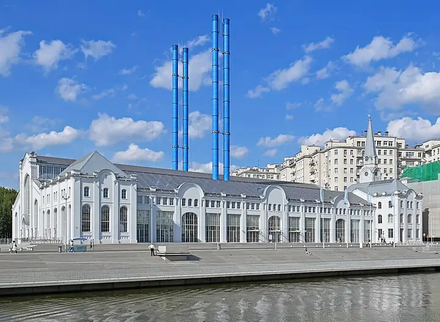

Подборку собрали 20 октября, прошедшие события скрыты. Свежая афиша — на главной

Фото: Юрий Д.К., CC BY 4.0 · Wikimedia Commons
Дом культуры · ЦАО
ГЭС-2
Бывшая электростанция напротив Кремля: выставки, кино и бар у входа. Вход бесплатный по регистрации на сайте, 11:00–22:00.
- ₽ · до 1 500 ₽ на человека
- в 3 планах
- 2 события в афише
Позвать сюда: ГЭС-2Открыть в каталоге: ГЭС-2Маршрут до места: ГЭС-2
Адрес и детали
- Адрес
- Болотная наб., 15
Открыть на Яндекс Картах (в новой вкладке) - Метро
- м. Кропоткинская
- Округ
- Центр (ЦАО)
- Цена
- до 1 500 ₽ на человека
- Часы работы
- пн–вс 11:00–22:00 · проверили в октябре 2026
Планы с этим местом 3
- ГЭС-2 · Дом культуры · м. Кропоткинская
- 4 минуты пешкомKaraoke Pro · Караоке-клуб
Бесплатные выставки ГЭС-2, а потом через дорогу Karaoke Pro: акустика Nexo, барабаны и бэк-вокал, в пятницу — живая группа. Открыто с четверга по субботу с 20:00.
Открыть план: ГЭС-2 и караоке с живой группойПозвать сюда: ГЭС-2 и караоке с живой группой
Фото: Юрий Д.К., CC BY 4.0 · Wikimedia Commons
- ГЭС-2 · Дом культуры · м. Кропоткинская
- 15 минут пешкомМузеон · Парк
Выставки и кино в бывшей электростанции, потом прогулка вдоль реки до Музеона.
Открыть план: ГЭС-2 и набережнаяПозвать сюда: ГЭС-2 и набережная
Фото: Юрий Д.К., CC BY 4.0 · Wikimedia Commons
- ГЭС-2 · Дом культуры · м. Кропоткинская
- 15 минут пешкомМузеон · Парк
Бесплатные выставки в бывшей электростанции, а потом прогулка вдоль реки до Музеона.
Открыть план: ГЭС-2 и прогулка к МузеонуПозвать сюда: ГЭС-2 и прогулка к Музеону
Фото: Юрий Д.К., CC BY 4.0 · Wikimedia Commons

Афиша площадки 2
ГЭС-2, галереи С2–С5 · м. Кропоткинская · 12+
Натюрморт, портрет и пейзаж глазами современных художников — сотня работ, десятки авторов. Бесплатный вход — каждую первую среду месяца.
Подробнее: Натюрморт. Портрет. Пейзаж. После жанраПозвать сюда: Натюрморт. Портрет. Пейзаж. После жанраБилеты : Натюрморт. Портрет. Пейзаж. После жанра (страница с билетами, откроется в новой вкладке)
Фото: Юрий Д.К., CC BY 4.0 · Wikimedia Commons
ГЭС-2, арт-производство «Своды» · м. Кропоткинская · 12+
Выставка о том, как художники думают сериями: вместо одного листа — весь цикл целиком. Небольшая, её легко совместить с другими залами ГЭС-2.
Подробнее: Принцип серийностиПозвать сюда: Принцип серийностиБилеты : Принцип серийности (страница с билетами, откроется в новой вкладке)
Фото: Юрий Д.К., CC BY 4.0 · Wikimedia Commons
Похожие рядом


Что ещё рядом


Как позвать
- Выбери план, место или событие — в карточке адрес, цены и маршрут в Яндекс Картах.
- Нажми «Позвать сюда» — соберётся приглашение-игра для свидания или голосование для компании.
- Отправь ссылку в любой мессенджер: тебе ответят, а компания отметит, куда и когда может. Бесплатно и без регистрации.